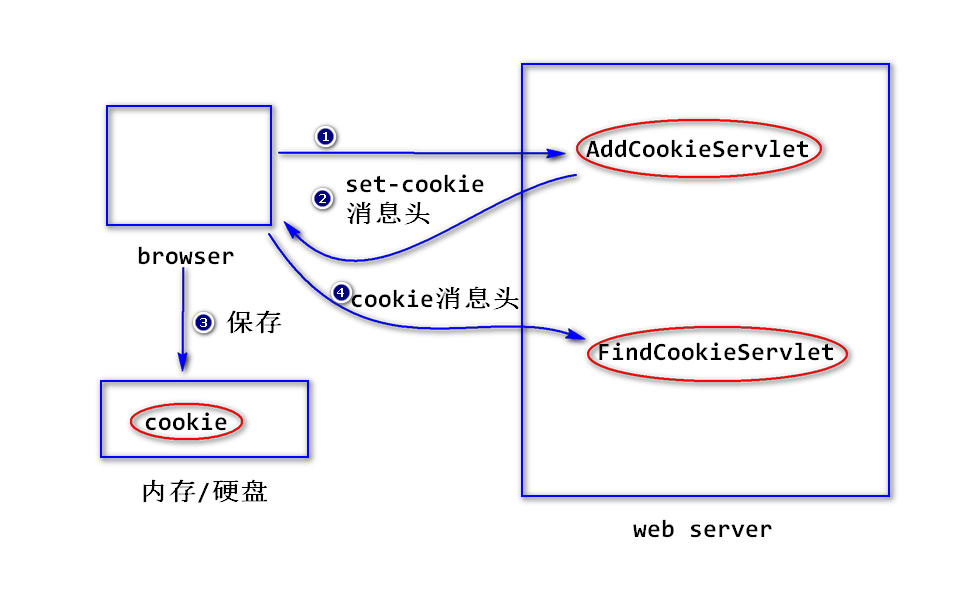
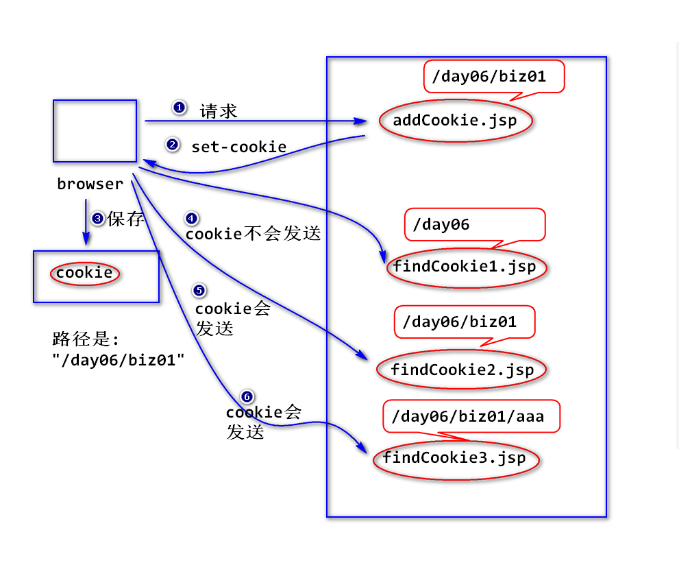
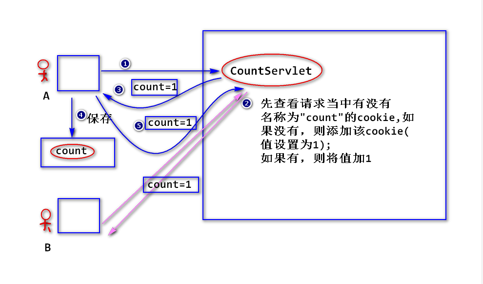

1.比较转发与重定向
(1)浏览器地址栏的地址有无变化?
转发之后，浏览器地址栏的地址不变，重定向会变。
(2)目的地(地址)有无限制?
转发有限制(要求属于同一个应用)，重定向地址无任何限制。
(3)能否共享request对象?
转发可以，重定向不行。
注:
当容器收到请求之后，会立即创建request对象和response
对象，当容器发送响应之后，会立即销毁这两个对象。也就是，
request和response的生存时间是一次请求和响应期间存在。
(4)一件事是否做完?
转发是一件没有做完，让另外一个web组件继续做；重定向是一件
事已经完成，然后再做另外一件独立的事件。
2.状态管理
(1)什么是状态管理?
将浏览器与web服务器之间多次交互当做一个整体来处理，并且将多次交互
所涉及的数据(即状态)保存下来。
(2)如何进行状态管理?
a.将状态保存在浏览器端(Cookie)。
b.将状态保存在服务器端(Session)。
(3)Cookie
1)什么是Cookie?
服务器临时保存在浏览器端的少量数据，用于保存用户的状态。
当浏览器第一次访问服务器，服务器会将少量数据以set-cookie
消息头的形式发送给浏览器，浏览器会将这些数据临时保存下来。
当浏览器再次访问服务器时，会将这些数据以cookie消息头的形式
发送给服务器。

2)如何添加Cookie?
Cookie c = new Cookie(String name,String value);
注:
Cookie必须有一个名字，值必须是一个字符串。
response.addCookie(c);
3)如何读取浏览器发送过来的Cookie?
Cookie[] request.getCookies();
注:
该方法的作用是用来获得浏览器发送过来的所有cookie,
一个Cookie对象封装了cookie的所有信息。
该方法有可能返回null。
String cookie.getName();
String cookie.getValue();
4)Cookie的生存时间
默认情况下，浏览器会将cookie保存在内存里面。
注：浏览器关闭，cookie会被删除。
可以调用setMaxAge方法来设置Cookie的生存时间。
cookie.setMaxAge(int seconds);
注:
单位是秒。比如要保存一个月
cookie.setMaxAge(30 *24 * 60 * 60);
值 >0:
浏览器会将cookie保存在硬盘上，超过指定时间，cookie
会被删除。
值 <0:
默认值(浏览器会将cookie保存在内存里面)
值 =0:
立即删除cookie。
比如，要删除一个名称为"username"的cookie:
Cookie c = new Cookie("username","");
c.setMaxAge(0);
response.addCookie(c);
5)Cookie的编码问题
a.什么是Cookie的编码问题?
Cookie只能存放合法的ascii字符，如果是非asicc字符(比如中文),
需要转换成合法的ascii字符的形式。
b.如何处理?
String URLEncoder.encode(String str,String charset);
String URLDecoder.decode(String str,String charset);
c.建议，在添加cookie时，统一使用encode方法来编码。
6)Cookie的路径问题
a.什么是Cookie的路径问题?
浏览器在向服务器发请求时，会比较请求路径是否与cookie的
路径匹配，只有匹配的cookie才会被发送。
b.Cookie的默认路径
默认等于添加该cookie的web组件的路径，比如
/day06/biz01/addCookie.jsp添加了一个cookie,则该cookie
的默认路径是"/day06/biz01"。
c.匹配规则
请求路径要么等于cookie的路径，要么是其子路径，符合这个条件的
cookie会被发送。
比如 cookie的路径是"/day06/biz01"
/day06/findCookie1.jsp no
/day06/biz01/findCookie2.jsp yes
/day06/biz01/aaa/findCookie3.jsp yes

d.修改cookie的路径
cookie.setPath(String path);
练习
写一个servlet,该servlet先查看有没有一个名称为”cart”的cookie,
如果有，则显示该cookie的值；如果没有，则添加。
写一个servlet,统计用户访问该servlet的次数。
